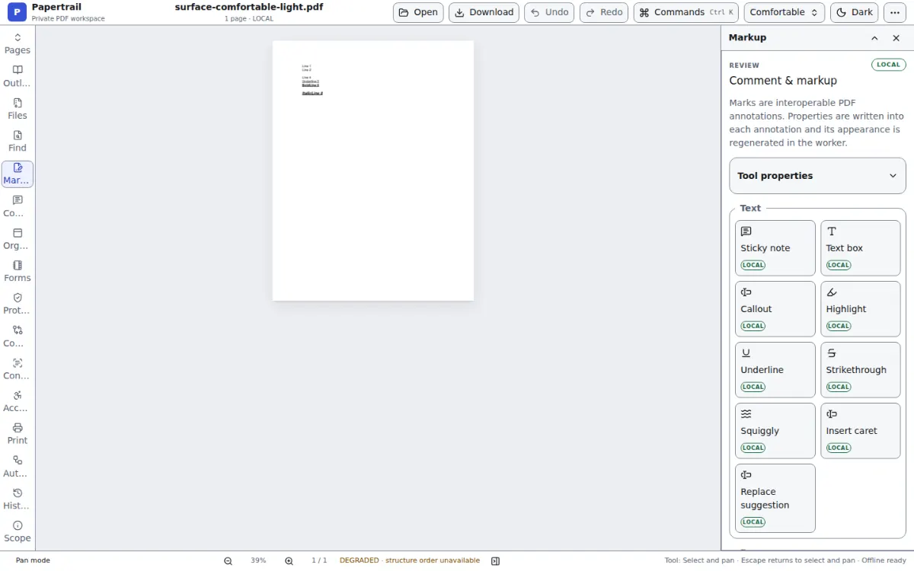
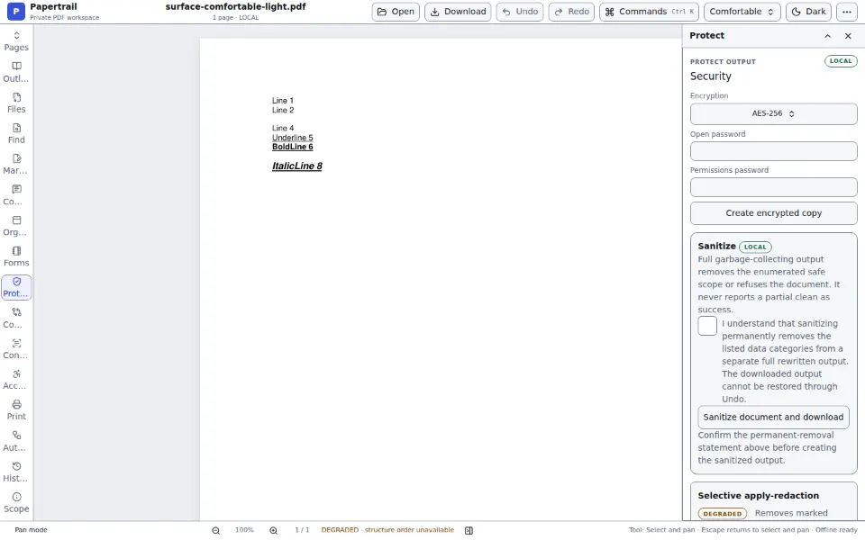

No receiving endpoint
The deployed product is static files. There is nowhere to POST a document.
Local PDF editor
Papertrail runs MuPDF inside your browser. No account, no telemetry, no document server, and no third-party request. Open a file and it stays on your device.

The data path
Other online editors protect a document while it travels to their server. Papertrail removes that trip.
The deployed product is static files. There is nowhere to POST a document.
The app can load its own assets and workers. Foreign network destinations are blocked.
Production output is scanned for foreign URLs, and browser tests fail on any cross-origin request.
default-src 'none'; script-src 'self' 'wasm-unsafe-eval'; style-src 'self' 'unsafe-inline'; connect-src 'self'; img-src 'self' blob: data:; font-src 'self' data:; worker-src 'self' blob:; object-src 'none'; base-uri 'none'; form-action 'none'; frame-src 'none'Built for real work
01 / Review
Keep pages, markup, forms, security, compare, and history open together. Resize and collapse them independently. Your page is never hidden by a modal tool drawer.
02 / Protect
Redaction, sanitizing, passwords, and signature boundaries are presented with their exact effects. Papertrail refuses unsafe inputs instead of returning a success-shaped result.
Honest boundary: timestamping, fresh revocation checks, and long-term validation require network services and are not offered.

A different category
| What happens | Papertrail | Adobe Acrobat online | Smallpdf |
|---|---|---|---|
| Document processing | Inside your browser | Uploaded for online processing1 | Uploaded for online processing2 |
| Account required to start | No | No for limited tools | No for limited tools |
| Runtime third-party requests | Blocked by policy | Service-dependent | Service-dependent |
| Corresponding source | AGPL-3.0-only | Proprietary | Proprietary |
1 Adobe Acrobat online editor and FAQ, accessed 2 August 2026. 2 Smallpdf editor and privacy policy, accessed 2 August 2026. Product policies can change; these citations describe the named online services, not their desktop applications.
Trust is inspectable
The editor, its forked engine, architecture decisions, capability inventory, security policy, and release gates are published together. The product names weaker and unavailable capabilities where you would try to use them.
Privacy has boundaries
The application and its WebAssembly engine load from this origin. Your document is not part of those requests.
Timestamp authorities and fresh OCSP or CRL checks are network services by definition. Zero egress wins.
Very large documents can exceed device memory or storage quotas. Papertrail refuses known unsafe work before mutation.
Questions
No document byte, filename, page image, or derived artifact enters a request. Application assets load from this origin separately.
No. There is no account system, login, subscription, or cloud document library.
Once the application shell and engine have been cached, repeat use can work without a connection. Explicitly save or download any output you need outside the browser.
Papertrail writes interoperable PDF structures. Its test suite grades written output with pdf.js and qpdf rather than asking MuPDF to approve its own work.
DEGRADED means a weaker local version exists and its limitation is shown before use. EXCLUDED means the engine lacks it or it requires a server.
No third-party security audit is claimed. The source, threat model, CSP, egress gate, and browser tests are published so the actual evidence is inspectable.
No signup. No upload.